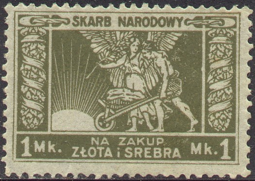
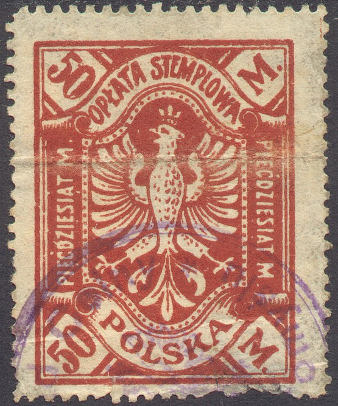

{kind=link}

Return To Catalogue - Poland - Warsaw fiscal stamps
Note: on my website many of the
pictures can not be seen! They are of course present in the
catalogue;
contact me if you want to purchase the catalogue.
Note: I'm only listing the stamps I've seen, other values might exist!

(Skarb Narodowy Na Zakup Zlota i Sreba)
I've seen the following values: 1 M green, 2 Mk green, 3 Mk blue, 5 Mk orange, 10 Mk brown, 25 Mk brown, 50 Mk violet, 100 Mk red and yellow, 1000 Mk, 25,000 Mk orange, 100,000 Mk brown and orange. If I'm well informed these stamps were used for taxes on gold and silver.
Value in 'FENIGOW' or 'MARKA': 10 f blue, 20 f blue, 40 f blue, 50 f blue, 1 M brown, 3 M brown, 4 M brown, 5 M brown, 10 M brown, 20 M brown, 50 M brown. All values exist imperforate and perforated.

Similar design, issued in 1924, but value in 'GROSZY' or 'ZLOTE': 10 g blue, 20 g blue, 40 g blue, 50 g blue, 1 Z brown, 2 Z brown, 3 Z brown, 5 Z brown.

I've seen: 10 M brown, 100 M green and yellow, 500 M violet and orange, 1000 M brown and green (larger design), 50000 M violet.

In this design or similar designs exist: 1 M brown, 2 M red, 3 M
blue, 4 M green, 5 M brown, 10 M orange, 20 M lilac, 50 M violet
and red, 100 M lilac and red, 200 M green and red and 500 M blue
and yellow. The values 100 M, 200 M and 500 M were re-issued in
slightly different colors and with vertical lines behind the
eagle: 100 M lilac and yellow, 200 M green, yellow and red, 500 M
blue, yellow and red. During the inflation period more values
followed: 1000 M brown and yellow, 1000 M brown, 2000 M, 3000 M,
5000 M, 10000 M, 20000 M brown and lilac, 20000 M brown, 30000 M,
50000 M, 100000 M, 500000 M, 1 Million M.


Groszy values (all in same design): 5 g brown, 10 g orange, 20 g green, 30 g red, 40 g violet, 50 g green.
Zloty values (all in same design): 1 Z red, 2 Z lilac, 3 Z blue, 5 Z brown, 10 Z brown, 20 Z green, 50 Z black.
5 g violet, 20 g brown, 50 g brown, 1 Z red, 3 Z blue, 5 Z green.


10 g orange, 20 g green, 25 g grey, 30 g red, 40 g blue, 40 g black, 50 g green, 1 Z brown, 2 Z red-brown, 3 Z violet, 5 Z olive-brown, 10 Z red.

30 g red, 1932, 'OPLATA STEMPLOWA'
The following values were issued: 10 g grey, 20 g brown, 25 g violet, 30 g red, 40 g brown, 50 g brown, 1 Z blue, 2 Z red, 3 Z brown, 4 Z yellow-brown, 5 Z red.
50 Z blue (design as 1948 issue, sorry, no image avaialbe yet): 8 values were issued in total.

5 Z black, 10 Z orange, 15 Z brown, 20 Z brown, 50 Z blue, 100 Z violet.

10 g blue, 20 g green, 50 g violet, 60 g brown, 1 Z blue, 1.50 Z blue, 3 Z violet, 5 Z brown, 6 Z red, 30 Z brown, 50 Z black.
Other fiscal stamp of which I don't know the use:

Inscription 'OPLATA STEMPLOWA PIECDZIESIAT M', issue for Poznan?
Literature: 'Poland Revenues' by J.Barefoot Ltd.
{kind=link}